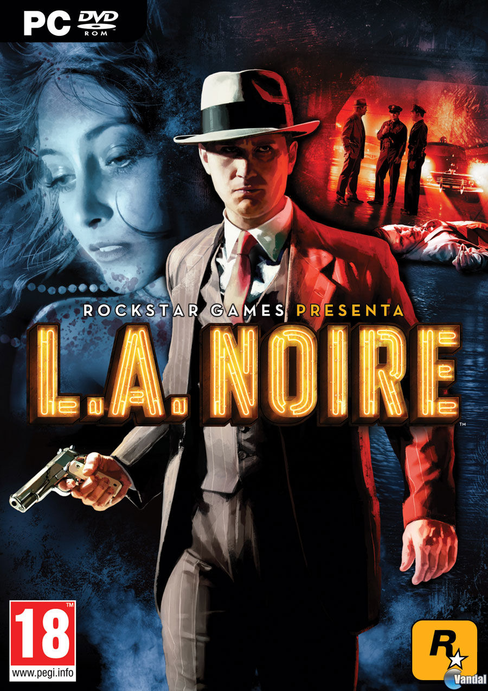
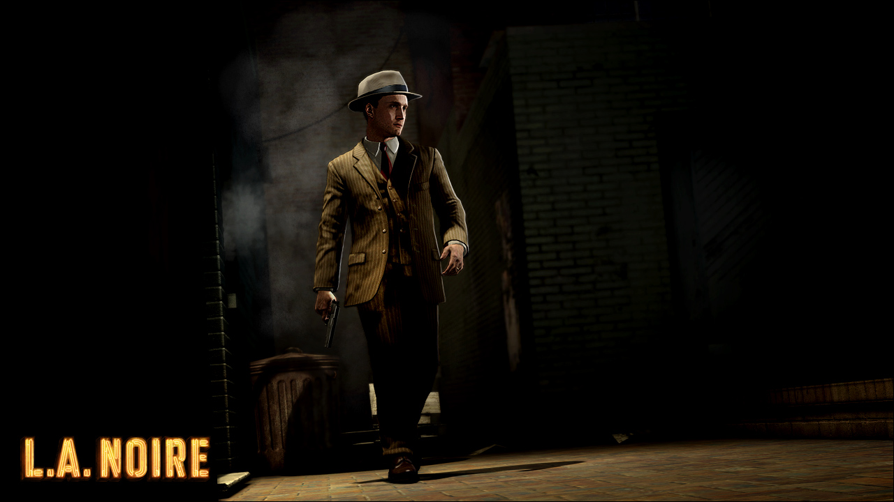
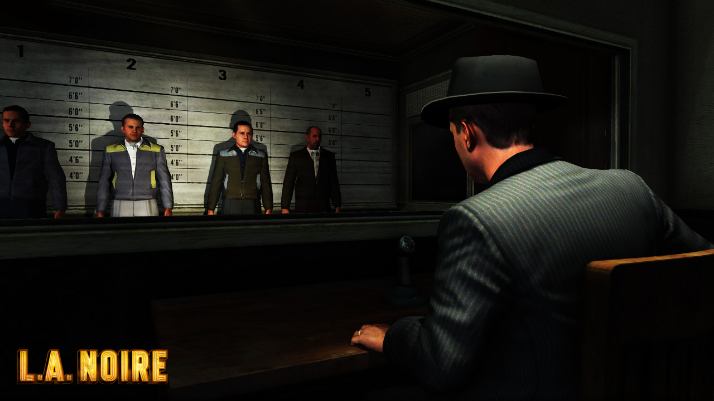
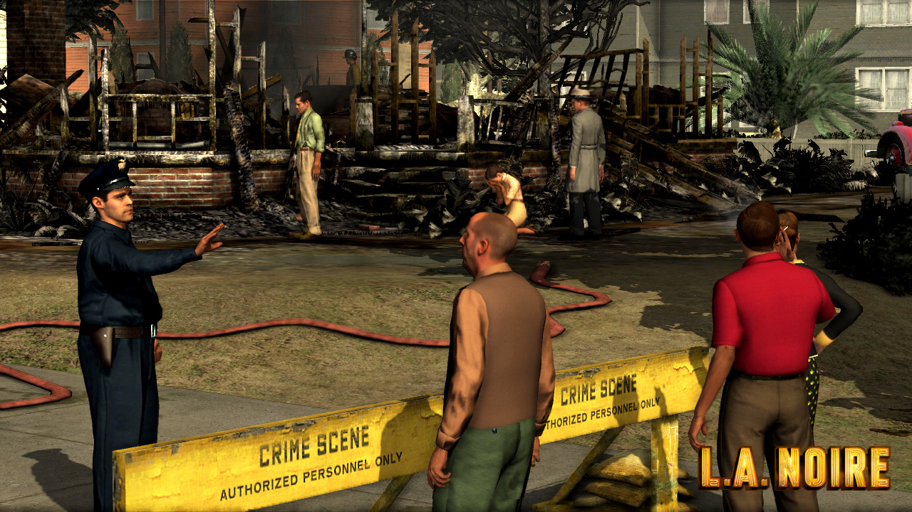
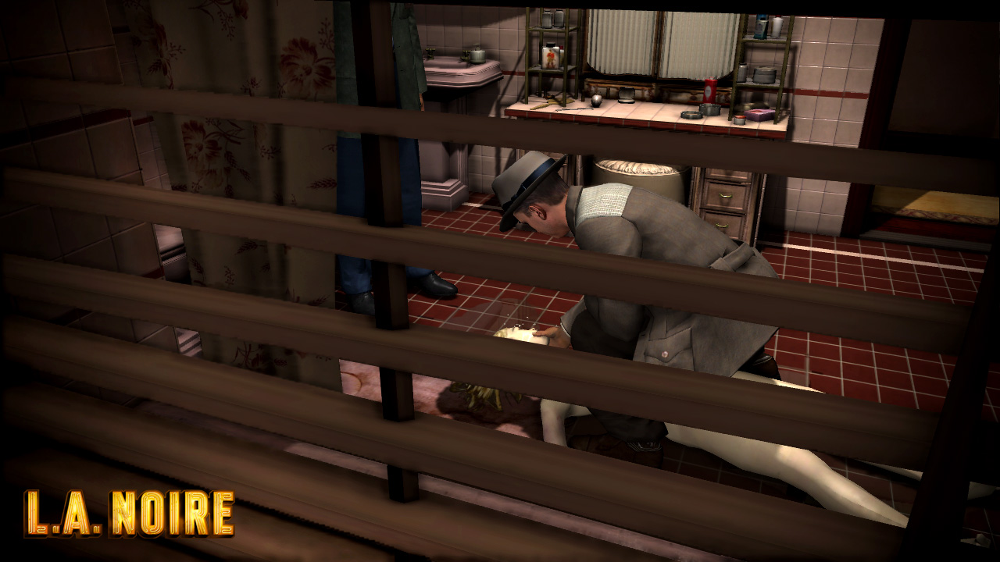

L.A. Noire

Descripción
L.A. Noire nos transporta a Los Ángeles de 1947, en plena época dorada de Hollywood. En esta aventura nos ponemos en la piel de Cole Phelps, un detective de policía que tendrá que abrirse camino dentro del cuerpo mientras investiga una serie de crímenes que esconden mucho más de lo que parece.
A medida que avancemos en la historia, tendremos que resolver diferentes casos relacionados con asesinatos, incendios provocados, tráfico de drogas y corrupción. Sin embargo, no todo será tan sencillo, ya que Phelps también tendrá que enfrentarse a los secretos y problemas que se esconden dentro de su propio departamento.
En cuanto a la jugabilidad, L.A. Noire combina la investigación de escenas del crimen con interrogatorios, persecuciones, tiroteos y conducción por una recreación bastante detallada de Los Ángeles. Una de sus características más llamativas es su sistema de interrogatorios, que utiliza las expresiones faciales de los personajes para ayudarnos a descubrir cuándo alguien está mintiendo o escondiendo información.
Precisamente, uno de los aspectos más revolucionarios del juego fue su tecnología de captura facial, que consiguió reproducir las expresiones de los actores con un nivel de detalle impresionante para la época. Esto ayudaba a que los interrogatorios fueran mucho más creíbles y aportaba una personalidad propia a la experiencia.
En cuanto a su recepción, L.A. Noire recibió críticas generalmente positivas y fue muy elogiado por su ambientación, sus investigaciones y su tecnología facial. También consiguió vender varios millones de copias y se convirtió en uno de los proyectos más particulares del catálogo de Rockstar. Eso sí, su desarrollo fue bastante complicado y el estudio responsable, Team Bondi, terminó cerrando en 2011.
Capturas del videojuego




Información del videojuego
| Desarrollador | Plataforma | Fecha de lanzamiento |
|---|---|---|
| Team Bondi | PlayStation VR, Oculus Rift, HTC Vive, Nintendo Switch, PS4, Xbox One, PC, Valve Index, PS3, Xbox 360 | 17 de mayo de 2011 |
Expansiones y casos adicionales
En estas expansiones añadieron casos adicionales como:
- The Naked City
- A Slip of the Tongue
- Nicholson Electroplating
- Reefer Madness
- The Consul's Car